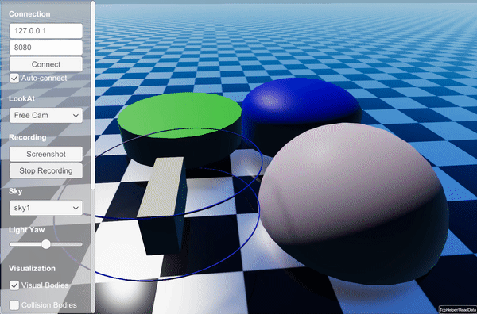

Raisim Server
RaisimServer serializes raisim::World and streams the data to clients via TCP/IP.
Use rayrai_tcp_viewer for supported server-side visualization.
For older Unity or Unreal visualization workflows, see Legacy Integrations.
For a workflow-level comparison between server-based visualization and
in-process rayrai rendering, see Visualization.
In addition to visualizing a raisim::World, raisim::RaisimServer can visualize additional objects.
The legacy visual-object showcase is displayed as follows; use the current
examples index for runnable source targets:

Typical usage
Create the server, launch it, and advance the world through the thread-safe integration helper:
raisim::World world;
raisim::RaisimServer server(&world);
server.launchServer(8080);
for (;;) {
server.integrateWorldThreadSafe();
}
integrateWorldThreadSafe() locks the world mutex, drains pending
client requests, decides whether this call is allowed to advance the world
(pause / step state), applies active client forces only on advancing ticks,
runs any callback overload, integrates the world when allowed, and unlocks
the mutex.
Thread safety and lifecycle
The server reads the world state from a background thread. If you modify the
world manually while the server is running, guard it with the visualization
mutex (lockVisualizationServerMutex() / unlockVisualizationServerMutex())
to avoid races.
The server can be paused with hibernate() and resumed with wakeup().
Call killServer() to stop the server thread and disconnect the client.
Sensor measurements
RaisimServer can request manual RGB/depth measurements from the current
rayrai TCP viewer. When a MeasurementSource::MANUAL camera reaches its
update period, the normal scene response includes its pose, lens model,
resolution, and clipping range. The viewer renders a complete camera pass and
returns BGRA pixels or metric depth values in a REQUEST_SENSOR_UPDATE
frame. The server validates every entry before replacing sensor buffers and
updating timestamps.
IMU and spinning LiDAR remain RaiSim-side measurements; their metadata is
streamed for inspection but the viewer does not return their samples. Use
MeasurementSource::RAISIM for RaiSim-computed sensors and manual RGB/depth
when the connected viewer should provide the render. See
RGB/depth sensor round trip on the TCP viewer page.
Synchronous updates (optional)
processRequests() implements a synchronous request/response loop used by
clients that explicitly pull world-state updates. It returns false if the
client does not respond or rejects the protocol version.
Protocol versioning and deformable streaming
The TCP wire protocol is explicitly versioned. Each request starts with a protocol header that advertises the negotiated feature set, and the server rejects newer or otherwise unsupported protocol versions with a clear error rather than misparsing the stream. The current feature flags are:
PROTOCOL_FEATURE_EXPLICIT_HEADER: the client and server exchange the explicit version header before each request.PROTOCOL_FEATURE_DEFORMABLE_DELTA: deformable mesh topology is sent only during initialization or when the topology changes; normal frames send vertex positions only.PROTOCOL_FEATURE_SIM_CONTROL: when both ends advertise this bit, the client may pause / resume / step the simulation and push external forces, torques, body poses, and articulated-system generalized coordinates over the wire. The server applies no authentication — if the connection is open, the client can drive it. See Interactive sim control below.PROTOCOL_FEATURE_CONTACT_OBJECT_TAGS: each streamed contact identifies both participating objects, enabling per-object contact counts and plots.
The rayrai TCP viewer negotiates all four flags automatically. Custom clients
can opt into any flag through the RaisimServer and RaisimTcpCommon
headers.
Interactive sim control
When the SIM_CONTROL feature is negotiated, a connected client (such as
rayrai_tcp_viewer) can drive the simulation from its UI rather than
just observing it. The viewer’s Object tab gets a Simulation row with
icon-text buttons for Pause / Resume / Step / Step 10.
Client requests added by this feature:
CR_PAUSE/CR_RESUME— toggle a flag consulted inintegrateWorldThreadSafe(). While paused,world_->integrate()is not called even though the network thread keeps streaming state.CR_STEP_N— queue N single-step integrations to advance while paused.CR_APPLY_FORCE— apply an external force at a world-space application point on a body. Drained at the next integration tick.CR_APPLY_TORQUE— apply an external torque on a body.CR_SET_POSE— teleport a single-body object to a position + quaternion.CR_SET_GC— set the generalized coordinate of an articulated system.
There is no authentication or per-client authorization — if the connection is open, the client can issue any request negotiated by both ends. The bind address is the only access control the server provides:
The same pause / step state is reachable from your own simulation code, so a headless server can drive its own loop:
server.pauseSimulation();
// ... do something while the integrator is paused; state streaming keeps running ...
server.stepSimulation(10); // queue 10 single-step integrations
// ... or release the brake completely ...
server.resumeSimulation();
if (server.isSimulationPaused()) { /* … */ }
Pose and generalized-coordinate requests are applied when the server drains
client requests under the world mutex. Force and torque requests refresh an
active client-force slot, held for 0.12 s of simulation time and applied on
each integration tick until refreshed or expired. While paused, the slot can
be refreshed but the force is not applied until a step or resume call allows
integrateWorldThreadSafe() to advance. stepSimulation(N) queues N
single-step integrations that drain one per integrateWorldThreadSafe()
call; resumeSimulation() clears any queued steps and resumes normal
integration.
raisim::RaisimServer server(&world);
server.setBindLoopbackOnly(false); // expose on all interfaces (off by default)
server.launchServer();
Keep the default (127.0.0.1-only) for development. Open the bind to a wider
network only when you trust every host that can reach the port.
Custom mutation under the world mutex
Examples that need to spawn / move / modify world objects every tick can pass
a callback to integrateWorldThreadSafe(). The callback runs inside the
world mutex after pending sim-control requests are drained and active client
forces are applied for advancing ticks. It runs before world_->integrate()
when the pause / step state allows the tick to advance:
for (int i = 0;; i++) {
server.integrateWorldThreadSafe([&]() {
if (i % 600 == 0) {
auto* ball = world.addSphere(0.1, 1.0);
ball->setPosition(0, -2, 0.8);
ball->setVelocity(0, 10, 0, 0, 0, 0);
}
});
}
The callback overload preserves all the pause / step / force / pose behavior
of the no-arg version — the viewer can still drive the simulation even when
the example mutates the world each tick. See
examples/src/server/dynamic_object_addition.cpp and
examples/src/server/dynamic_heightmap.cpp for working uses, and
examples/src/server/sim_control_demo.cpp for a minimal demo of the
viewer-facing controls.
Default bind address
RaisimServer binds to 127.0.0.1 by default rather than INADDR_ANY.
This prevents accidental exposure to a shared LAN. Opt back into external
visibility with:
server.setBindLoopbackOnly(false);
Treat this as a security boundary — once the server is reachable from a wider network, every client on that network can pause / step / force-apply / spawn-remove. There is no token or authorization layer to fall back on.
Discovery beacons
While the server is running, RaisimServer advertises itself with a UDP
beacon once per second on port 59312. The beacon payload contains the
RaiSim TCP protocol version, TCP port, host name, executable name, bind mode
(loopback or all), and connection status. rayrai_tcp_viewer
uses these beacons to populate the detected-server list in its Connection
tab.
With the default loopback bind, beacons are sent only to 127.0.0.1. After
server.setBindLoopbackOnly(false), they are broadcast on the local network
so another machine can discover the server. Discovery is only a convenience
layer: clients may always connect directly to the TCP endpoint with
--connect host:port or equivalent custom-client code.
For Windows LAN use, allow both the TCP server port (8080 by default) and
UDP port 59312 through the firewall. If UDP broadcast is blocked, manual
TCP connection still works.
RaisimServer API
Warning
doxygenclass: breathe_default_project value ‘raisim’ does not seem to be a valid key for the breathe_projects dictionary
Visuals API
Warning
doxygenstruct: breathe_default_project value ‘raisim’ does not seem to be a valid key for the breathe_projects dictionary
Polyline API
Warning
doxygenstruct: breathe_default_project value ‘raisim’ does not seem to be a valid key for the breathe_projects dictionary
ArticulatedSystemVisual API
Warning
doxygenstruct: breathe_default_project value ‘raisim’ does not seem to be a valid key for the breathe_projects dictionary